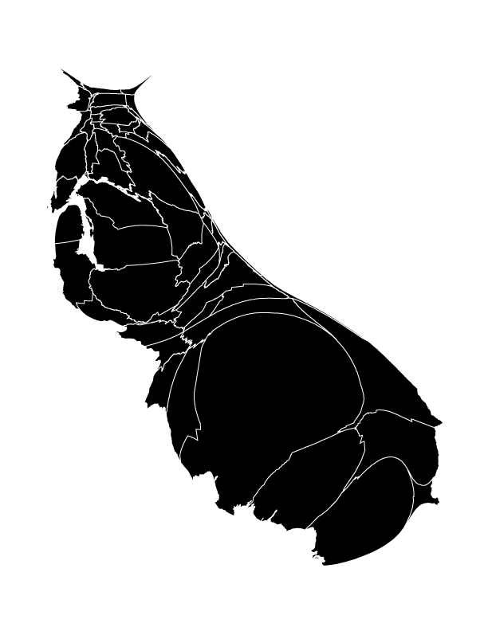
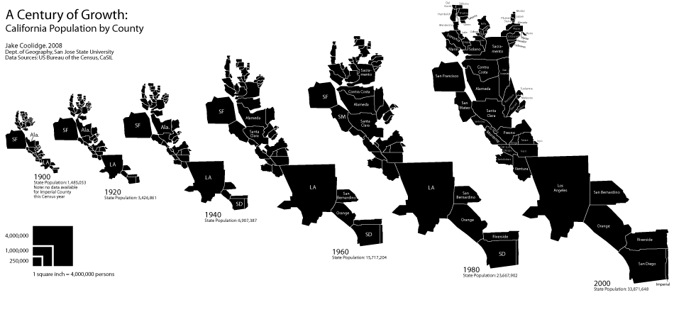

Experiments and Explorations
A Century of Growth
California population, 1900–2010
2018. Adobe Illustrator artwork. Adapted from a poster prepared for the 2018 NACIS Map Gallery.
View the interactive version here, which uses Leaflet.js and Illustrator artwork adapted to GeoJSON using MAPublisher.
A cartogram is a thematic map that is "drawn so that the areas of internal enumeration units are proportional to the data they represent"1. As a result, cartograms are uniquely suited to enable immediate visual comparisons of quantities, and coupled with static multiples in a temporal series, can enable comparisons across time. This cartogram series uses the county as the enumeration unit, and resizes each county relative to the other to show population patterns across the state of California. At a glance it should be clear that population is not evenly distributed across the state. Perhaps more striking is the temporal dimension to California's extraordinary population growth since 1900.
The sizing of the county polygons remains consistent throughout the visualization, for example allowing the magnitude of San Francisco's population in 1900 to be compared to the Sacramento's 1980 population.
This is a semi-contiguous cartogram. Due to the fact that some counties with large land areas have very small populations (for example, Inyo County), and some counties with small land areas have large populations (San Francisco), with a wide range of population densities in between, some shearing is inevitable as the counties are resized according to population.
I start with a table of all county populations by census year. I add columns to the table where I divide each population by 10,000 and round to the nearest integer. This gives me the number of 0.1 x 0.1 inch squares that I will use to build each county. For example, in 1980 Calaveras County had 20,710 inhabitants, so that county's shape will be built out of 2 squares, and in that same year Fresno County had 514,621, for a total of 51 squares. In limited cases, I draw squares and rectangles that are smaller than 0.1 x 0.1 in. In 1900, Inyo County had 4,377 inhabitants, and my table produces a result of 0 squares. Rather than round up to 1 square, I create a square that is 0.05 x 0.1 in, or roughly 5,000 persons according to my scale.
I set up the document's grid for 0.1 inch increments, enable it, and then select Snap to Grid. I build larger counties out of smaller groups of "blocks", almost Tetris-style, so I can shape and fit the counties to match, as much as possible, their original shapes and the topological relationships amongst the various counties (for example, Santa Barbara County is vaguely rectangular, shares its eastern border with Ventura County, its northern border with San Luis Obispo County, and its northeastern corner meets the southwestern corner of Kern County). I refer to a normal map of California counties continuously during this phase. It's impossible not to incur some shearing and discontinuity in the process. Mono County, with its 1980 population of 8,577, would be stretched so thin as to be rendered practically invisible. I discuss a contemporary alternative of cartogram production and why I've opted for this "counting squares" method as an addendum below.
In the last decade, the Cartogram Geoprocessing tool, created by Tom Gross and available for ArcGIS Desktop, has automated the cartogram creation process. It makes use of a method first published by physicists/computational scientists Michael T. Gastner and M.E.J. Newman in 2004, the "diffusion-based method for producing density-equalizing maps"2, which adapts algorithms developed in the materials sciences to warp the size of shapes while maintaining topological relationships. Kenneth Field has noted that their breakthrough represents "the holy grail" in cartogram production, solving many of the problems of topology and continuity that hindered earlier efforts.3 The result are maps with a distinct aesthetic akin to inflated and deflated balloons, or other decidedly organic analogies. A map I made using Gross's tool depicting California's population in 2000 makes the state look like a very well-fed slug. Interestingly, the "slug's antennae" of Del Norte and Modoc Counties, in the north of the state, also manifest themselves in a less organic way in my cartogram.
Of course, I am not making use of the affordances of Gross's tool in this cartogram series. Aside from the strange (if mathematically precise) aesthetic, I'm also interested in the idea of recovering data from the visualization; in other words, a user can visually compare the shapes to the simple legend and “recover” approximate values from the visualization. In this printed version, a user could even measure the dimensions of the polygons and arrive at population values rounded to multiples of 10,000. (Of course, the included table should dissuade anyone from doing so.) As graduated symbols, the relative sizes of squares are considerably easy for users to compare, even easier than graduated circles. My cartograms are built with the square as the atomic unit, bolstering the legibility of the quantities while simultaneously simplifying and abstracting the resulting shapes away from their original mapped appearance. It's a trade-off, but I happen to be a fan of the older, human-produced cartogram production methods, despite their topological limitations.
Population data was acquired from the US Census Bureau. Check out my readme on GitHub to learn more about how the interactive version was created, and information about one of my earliest grad-school projects—the first version of this visualization. This work marks the ten-year anniversary of that work, reimagining and redesigning it along the way.

- Dent, Borden D. (1996). Cartography: Thematic Map Design. p. 203. 4th Ed. Dubuque, Iowa: Wm. C. Brown Publishers.
- Diffusion-based method for producing density-equalizing maps by Michael T. Gastner and M.E.J. Newman. Proceedings of the National Academy of Scientists, May 18, 2004.
- ICACI blog post by Kenneth Field, Dec. 15, 2014.